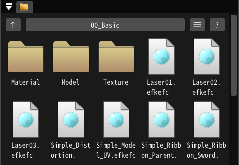
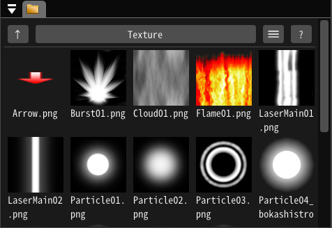
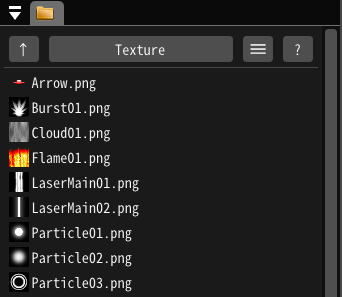
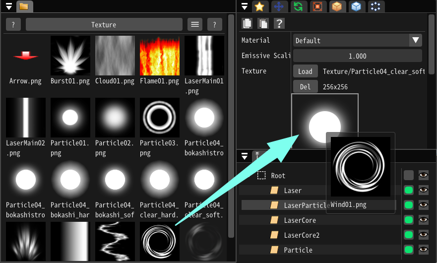

File Browser¶
Overview¶
The File Browser is a panel that displays asset files related to Effekseer.
Icon display mode¶

Preview image files¶

List display mode¶

How to use¶
Move current directory¶
Double-clicking a directory displays the asset files in that directory.
Pressing the UP button displays the asset files in the directory above.
Open effect files¶
Double-click on an efkefc file to open it in the current editor.
Open other files¶
Double-clicking on any other file will open it in its associated application.
D&D assignment of asset files¶
Textures, models, and sound files can be specified by dragging and dropping them into the parameters.
